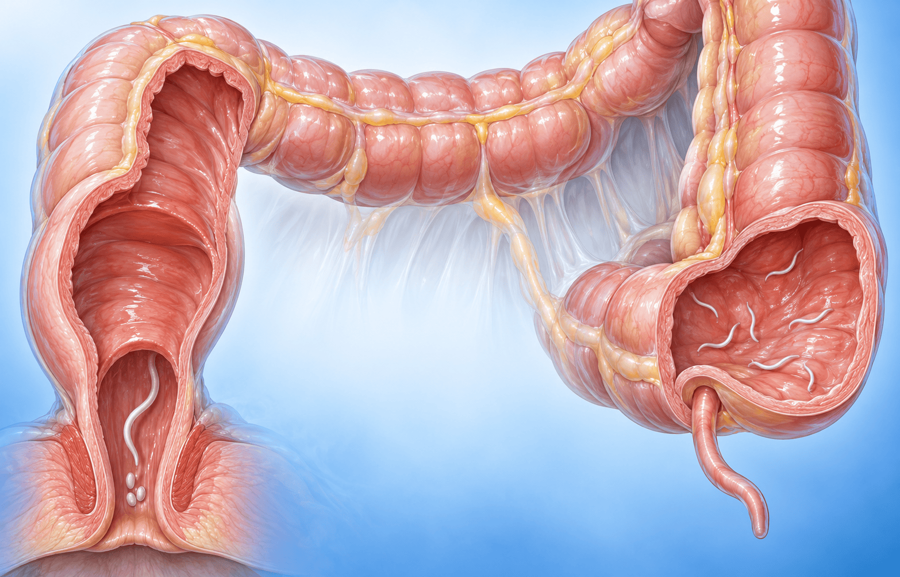

요충은 이렇게 항문을 가렵게 합니다

요충의 생활
성충은 대장이 시작되는 맹장(cecum) 주변에서 기생합니다. 암컷이 항문으로 이동해 충란(알)을 내놓기 때문에 항문에 충란이 많이 묻고, 그 자극으로 항문이 가렵습니다.
요충은 한국에 아직 있습니다. 2008~2019년 유치원생 조사(체계적으로 짠 조사는 아님)에서 충란 양성은 약 1~2%(2% 미만)였고, 제주뿐 아니라 서울도 적지 않았습니다.
 숫자로 보는 요충
숫자로 보는 요충
암컷 성충
8~13
mm (약 1cm)
수컷 성충
2~5
mm
충란(알) 크기
50~60
μm · 감씨 모양
감염력이 생기기까지
6시간
몸 밖에 나온 뒤
왜 가족이 함께 치료할까요
| 회충 · 편충 · 구충 | 요충 | |
|---|---|---|
| 몸 밖에 나온 뒤 | 환경에서 시간이 지나야 성숙해 먹으면 감염되는 형태가 됩니다. | 6시간만 지나면 사람에게 감염되는 형태가 됩니다. |
| 그래서 | 환경 속 충란이 주된 감염원입니다. | 자기가 배출한 충란에 스스로 다시 감염(자가감염)되기 쉽고, 가족 모두 감염된 경우가 많습니다. |
 치료 — 가족이 함께, 반복해서
치료 — 가족이 함께, 반복해서
1
알벤다졸 400mg을 1회 복용합니다. 가족도 함께 치료합니다.
2
2~3주 간격으로 다시 복용합니다.
3
이렇게 모두 2~3회 반복합니다.
 약을 오래 먹기보다 반복이 중요합니다
약을 오래 먹기보다 반복이 중요합니다
- 기생충은 유충 단계에서 구충제 효과가 떨어집니다.
- 그래서 한 달씩 오래 치료하기보다 간격을 두고 반복 치료하는 것이 요충의 특징입니다.
- 치료 뒤에도 가려움이 바로 가라앉지 않는 경우가 있습니다. 다시 치료할지는 진료에서 함께 상의합니다.
 가려움이 계속되거나 약을 먹었는데도 좋아지지 않으면 진료 때 물어보세요. 가족 중 함께 가려운 분이 있는지도 알려 주시면 치료 범위를 정하는 데 도움이 됩니다.
가려움이 계속되거나 약을 먹었는데도 좋아지지 않으면 진료 때 물어보세요. 가족 중 함께 가려운 분이 있는지도 알려 주시면 치료 범위를 정하는 데 도움이 됩니다.